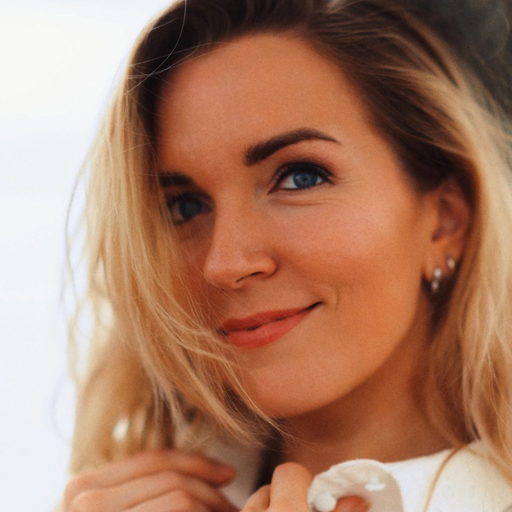

Катерина Капустина - фотограф, чья работа исследует пересечение театральности и близости. Её переход к портретной съёмке несёт в себе особую чувствительность к свету, тени и повествовательной силе одного кадра.
Философия"Фотография -- это не фиксация того, что видно, а создание эха того, что чувствуется."